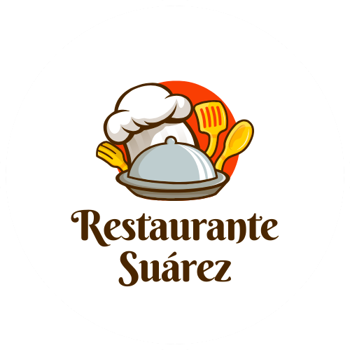

Bienvenido a Restaurante Suárez
En Restaurante Suárez nos apasiona ofrecerte una experiencia gastronómica única. Disfruta de una variedad de platos preparados con ingredientes frescos y de alta calidad, en un ambiente acogedor y moderno. Ya sea para una cena especial o una comida casual, estamos aquí para brindarte el mejor servicio.

Uno de los platos destacados en Restaurante Suárez es el Pulpito Wey, un pulpo a la brasa servido con una crema de palta y lima. Este platillo tiene un toque mexicano gracias al pico de gallo y la mayonesa de chipotles. Es ideal para acompañarlo con el cóctel Cucumber Rush, recomendado para realzar los sabores.
Nuestro logo
El logo de Restaurante Suárez representa la esencia de la gastronomía elegante y acogedora. Su diseño transmite calidez, tradición y un toque moderno, reflejando la calidad y pasión por la cocina. Con colores sofisticados y una tipografía clara, evoca una experiencia culinaria única, donde los sabores y el ambiente se combinan para ofrecer un momento inolvidable. Ideal para destacar la identidad del restaurante, su estilo limpio y profesional lo hace fácilmente reconocible y atractivo para los clientes.